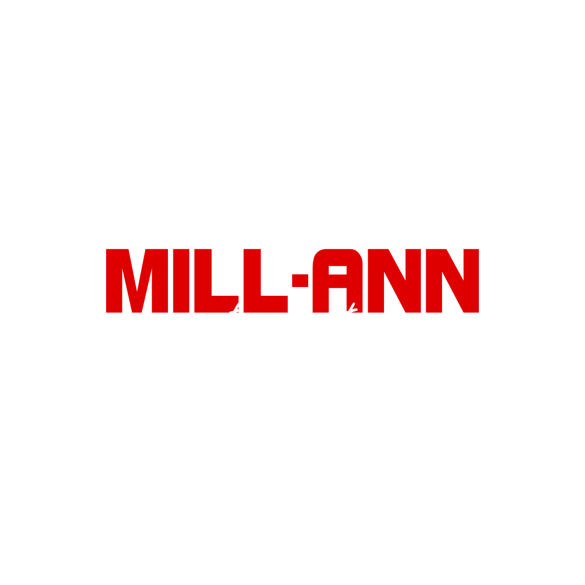

Jednodenní event
Každý Mill-Ann turnaj se odehraje během jednoho dne.

MILL-ANN F1 EVENT
Jeden den. 24 závodů. Jeden vítěz.
Mill-Ann je nepravidelně pořádaný F1 event. Celý event se odehraje během jediného dne.
MILL-ANN
Mill-Ann není klasický šampionát roztažený přes několik týdnů. Každý turnaj je samostatný event, který se koná jednou za čas a celý se odehraje během jednoho dne.
V rámci jednoho turnaje se jede celkem 24 závodů, přičemž každý závod má 3 kola a kvalifikace je náhodná.
HISTORIE
CHAMPIONSHIP
Souhrn bodů napříč všemi odehranými Mill-Ann turnaji.
GRID
Každý jezdec má vlastní profil se statistikami.
INFO
Každý Mill-Ann turnaj se odehraje během jednoho dne.
V jednom turnaji se jede celkem 24 krátkých závodů.
Každý závod má tři kola.
Startovní pořadí se určuje náhodnou kvalifikací.
Turnaj může pokračovat i po vydání dalších dílů hry.
Všichni jezdci mají auta nastavená a vytuněná stejně, aby měl každý stejné podmínky.
AKTUALITY
MOMENTS